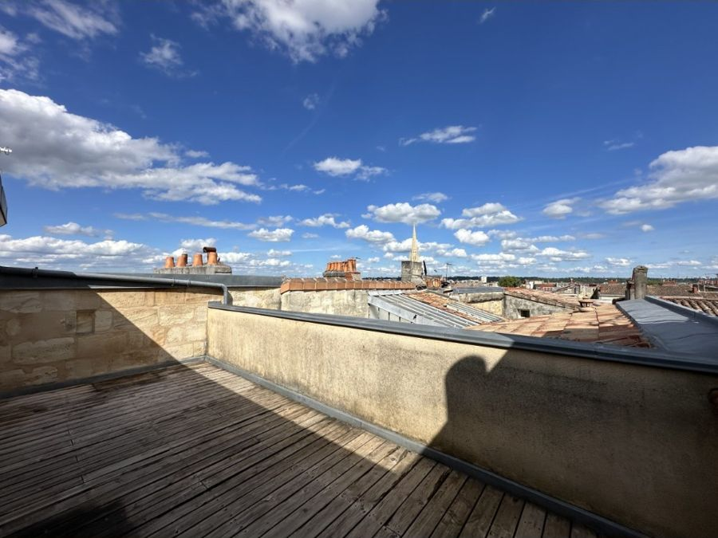
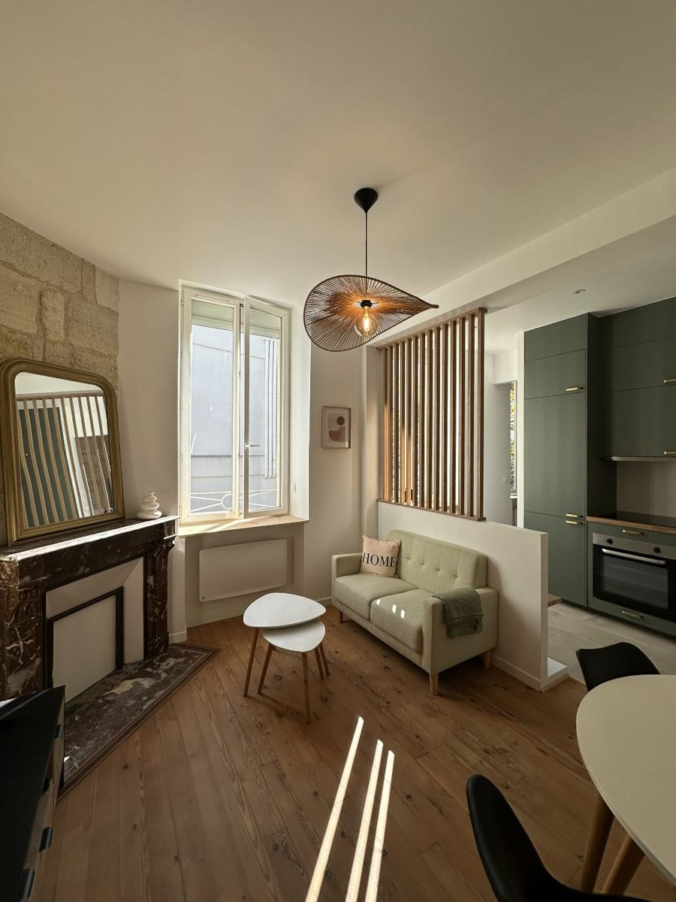
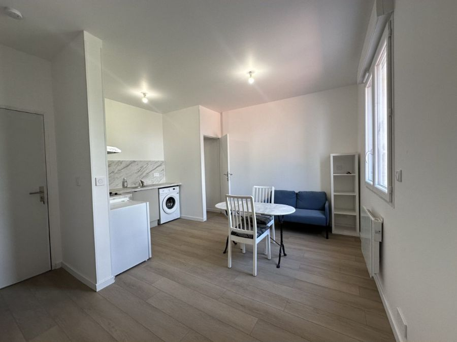

interlocuteur unique, basé à Bordeaux
pour prendre en charge chaque demande
TTC des loyers encaissés, à partir de
de gestion offerts au lancement
Ce que comprend notre gestion
Un administrateur de biens qui s'occupe de tout
| Loyers | Appel des loyers, encaissement, quittances, reversement chaque mois |
|---|---|
| Impayés | Relances, mise en demeure, déclaration à la garantie, suivi de la procédure |
| Charges | Provisions, régularisation annuelle, révision du loyer selon l'IRL |
| Travaux | Demandes du locataire, devis, suivi des artisans, sinistres |
| Réglementation | Encadrement des loyers, permis de louer, décence, diagnostics |
| Fin de bail | Congé, état des lieux de sortie (offert), restitution du dépôt de garantie |
| Reporting | Compte rendu mensuel, récapitulatif annuel pour vos impôts, espace en ligne 24 h/24 |
Vous gardez la main sur les décisions importantes, sans gérer le quotidien.
Mise en location
Le bon locataire, en toute sécurité
- Estimation du loyer, conforme à l'encadrement et au marché
- Vérificationsdiagnostics, décence, permis de louer si nécessaire
- Photos, visite virtuelle et annonce diffusée
- Visites et sélectiondossiers vérifiés (DossierFacile)
- GarantieVisale ou GLI partenaire selon le profil
- Bail signé en ligne, état des lieux avec photos, remise des clés
Vide, meublé ou bail mobilité : nous adaptons la formule à votre bien.

Ils nous font confiance
Récemment loués par Casao


Tarifs
Des prix affichés, sans frais cachés
Offres réservées aux biens confiés en gestion avec engagement [durée]. Honoraires déductibles de vos revenus fonciers au régime réel.
Pourquoi Casao
Une gestion pas chère, pas une gestion au rabais
Une agence bordelaise, un interlocuteur qui connaît votre quartier.
Une réponse rapide aux demandes du locataire comme aux vôtres.
Tarifs affichés, comptes rendus clairs, aucun frais caché.
Encadrement, permis de louer, décence : notre quotidien.
Zone d'intervention
Bordeaux et sa métropole
De la Victoire aux Chartrons, de Saint-Michel à la Bastide, et dans les communes de la métropole.
- Bordeaux
- Mérignac
- Pessac
- Talence
- Bègles
- Le Bouscat
- Cenon
- Lormont
- [à confirmer]
Questions fréquentes
Combien coûte une gestion locative à Bordeaux ?
Les agences facturent généralement entre 5 et 8 % des loyers. Chez Casao : 6,9 % TTC jusqu'à 800 € de loyer, 6,4 % jusqu'à 1 700 €, 5,9 % au-delà, minimum 39 € TTC par mois. Voir le simulateur.
Quelle différence entre gestion locative et administrateur de biens ?
Aucune dans les faits : l'administrateur de biens est le professionnel, titulaire d'une carte et d'une garantie financière, qui gère la location pour le compte du propriétaire.
Que se passe-t-il en cas de loyer impayé ?
Casao relance le locataire, envoie la mise en demeure et active la garantie, Visale ou GLI. Avec la GLI en option, l'impayé est déclaré dès le 20 du mois. [délai d'indemnisation selon le contrat de l'assureur]
Comment suis-je informé de ce qui se passe dans mon bien ?
Par votre espace propriétaire en ligne : compte rendu mensuel, documents, dépenses. Et par téléphone avec votre interlocuteur dédié.
Qui s'occupe des travaux ?
Nous, avec notre réseau d'artisans. Les travaux jusqu'à 500 € TTC sont inclus dans la gestion ; au-delà, rien n'est engagé sans votre accord, sauf urgence.
Puis-je changer d'agence de gestion ?
Oui, en respectant le préavis de votre mandat. Casao reprend le dossier et informe le locataire.
Faut-il un permis de louer à Bordeaux ?
Seulement dans certains secteurs. Casao vérifie votre adresse et monte le dossier : c'est offert pour les biens en gestion.
Pour aller plus loin
 Encadrement des loyers à Bordeaux : le guide du propriétaire bailleur
Encadrement des loyers à Bordeaux : le guide du propriétaire bailleur Documents à fournir par le propriétaire pour louer à Bordeaux
Documents à fournir par le propriétaire pour louer à Bordeaux Loyer impayé à Bordeaux : que faire quand le locataire ne paie plus ?
Loyer impayé à Bordeaux : que faire quand le locataire ne paie plus ?